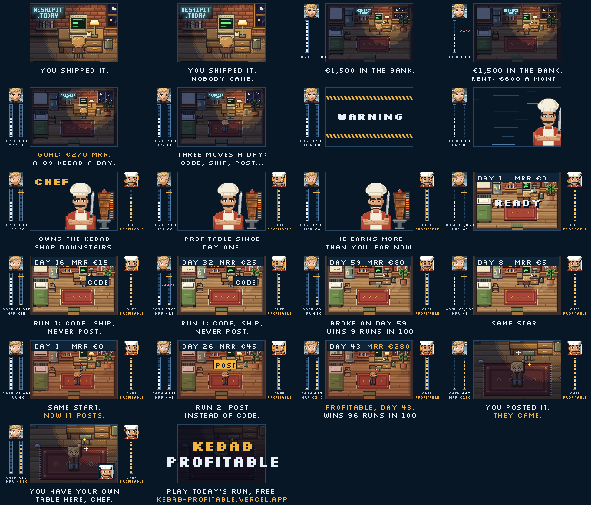

A · Chosen
Boss fight
- The room from the game, a segmented energy bar each for cash and MRR, and Chef as the boss with a full bar.
- WARNING, READY, a bar filling tick by tick: the Mega Man X feel, all of it drawn new.
- Two real runs from the engine, with one variable changed.
Why it won: it is the only one where the picture is the model. The bars are the goal and the cash, and the runs show cause and effect. Chef earns his place as the bar to clear.